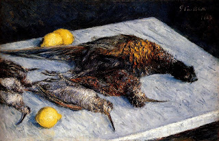

Menachot 101 - Which Offerings May be Redeemed
If an animal offering became blemished, it may be redeemed, that is, exchanged for money. After redemption, the money becomes sanctified and has to be used for the same purpose as the animal was designated for, and the animal can be used. The law about the redemption of animals is stated in the Torah , but what other offerings can be similarly redeemed?
The flour offering and the libation that became ritually impure can be redeemed, provided that they have only been designated for that purpose, but not put in a Temple vessel. Before they are put in the Temple vessel, they possess only monetary sanctity, and that is why the redemption is possible. Once they have been put in a vessel, the vessel sanctifies them with the physical sanctity, now inherent in them, and after that redemption is impossible.
Bird offerings, the wood used to fuel the Altar's fire, the frankincense and the vessels themselves can never be redeemed, even if they become ritually impure. That is because these objects attain physical sanctity immediately upon consecration, and completely miss the stage of monetary sanctity, at which redemption would be possible.
Art: Gustave Caillebotte - Game Birds And Lemons